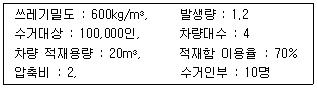
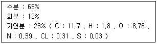
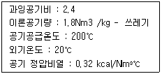
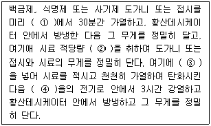
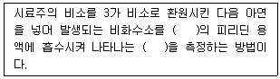
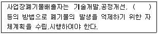

폐기물처리기사 (2002-03-10 기출문제)
1과목: 폐기물 개론
1. Pipe-line 수송방법에 관한 설명으로 알맞지 않은 것은?
- 가설후 경로 변경이 곤란하다.
- 쓰레기 발생밀도가 높은 곳은 이송이 곤란하다.
- 장거리 이용이 곤란하다.
- 투입구를 이용한 법죄나 사고의 위험이 있다.
(정답률: 알수없음)

2. 건식 분별방식에 관한 설명으로 알맞지 않은 것은?
- 체에 의한 분별은 조성에 따른 입경의 차가 클수록 효과가 크다.
- Trommel 에 의한 분별은 원통의 체를 수평으로부터 5도 전후로 경사된 축을 중심으로 회전시켜, 체분리하는 것이다.
- 와전류분리는 비극성이고, 전기전도도가 좋은 물질을 와전류현상에 의하여 분리하는 방식이다.
- 광화학분별은 물질의 광학적 특성을 이용한 것으로 고압공기분사부, 제1호퍼-제3호퍼 배출구로 되어 있다.
(정답률: 알수없음)
3. 쓰레기의 화학적 조성 성분 분석치를 이용하여 폐기물의 발열량을 산출하는 방법으로 Dulong의 식을 들 수 있다. 이 식과 관계 없는 항목은?
- S
- N
- H
- C
(정답률: 알수없음)
4. 분뇨의 함수율이 95%이고, 유기물 함량이 고형물량의 60%를 차지하고 있다. 소화조를 거친 뒤 유기물량을 조사하였더니 원래의 반으로 줄었다고 한다. 소화된 분뇨의 함수율(%)은?
- 95.5%
- 96.0%
- 96.5%
- 97.0%
(정답률: 알수없음)
5. 적환장을 이용한 수집, 수송에 관한 설명으로 알맞지 않은 것은?
- 소형의 차량으로 폐기물을 수거하여 대형차량에 적환 후 장거리를 수송하는 시스템이다.
- 적환이 시행의 주된 이유는 기술부족으로 일반적으로 널리 이용될수 있는 수집, 운송 방법이 부족하기 때문이다.
- 적환장은 수송차량에 싣는 방법에 따라서 직접부림, 간접부림등 크게 두가지로 구별된다.
- 적환장 설치장소는 개별적 고형물 발생지역의 하중중심에 되도록 가까운 곳이 알맞다.
(정답률: 알수없음)
6. 압축기에 쓰레기를 넣고 압축시킨 결과 용적감소율이 80%이었다고 한다. 이때 압축비는?
- 1.25
- 2.5
- 5.0
- 8.0
(정답률: 알수없음)
7. 도시하수 슬러지를 열분해(Pyrolysis)방법으로 처리하고자 한다. 열분해에 대한 설명으로 옳지 않는 것은?
- 반응온도 및 가열속도는 중요한 인자이다.
- 반응 후 부산물로서 oil 및 Char 가 형성된다.
- 고온에서는 액상생성물이 저온에서는 기상생성물이 주로 생성된다.
- 반응시 생성되는 gas는 주로 메탄, 탄산가스, 수소가스 등이다.
(정답률: 알수없음)
8. 분뇨의 독성 중 옳지 않은 것은?
- 도시하수에 비하여 생물학적으로 분해가능 함유도가 높다.
- pH는 7~8.3 정도이며 고액분리가 어렵다.
- 분과 뇨의 혼합비는 양적으로 1 : 10 정도이며 고형물질의 비는 7 : 1 이다.
- 분뇨의 비중은 1.02, 질소화합물 함유도가 높다.
(정답률: 알수없음)
9. 다음 슬러지 농축방법 중 에너지 소모가 가장 큰 것은?
- 원심농축
- 증발농축
- 중력침강농축
- 공기부상농축
(정답률: 알수없음)
10. 도시 고형페기물의 경우 총 폐기물 관리비용에 80%를 차지하는 관리 기능요소는?
- 폐기물 저장 및 적환
- 수거
- 처리 및 회수
- 최종처분
(정답률: 알수없음)
11. 폐기물의 감량화 방안 중 발생원 대책으로 가장 거리가 먼 것은?
- 적정 저장량 관리
- 포장용기 및 포장재의 절약
- 중고품시장 및 알뜰시장의 활용
- 재생이용
(정답률: 알수없음)
12. 다음 조건의 가진 지역의 일일 최소 쓰레기 수거횟수는?

- 0.5회
- 2회
- 4회
- 8회
(정답률: 알수없음)
13. 다음은 도시폐기물의 가연분 원소조성을 나타낸 것이다. 이론적 연소공기량(Nm3/kg)은 얼마인가?

- 2.46 Nm3/kg
- 1.23 Nm3/kg
- 3.43 Nm3/kg
- 7.52 Nm3/kg
(정답률: 알수없음)
14. 쓰레기의 물리적, 조성성분(비)에 관한 설명 중 알맞지 않은 것은?
- 가연성과 비가연성 물질을 구분하다.
- 가연성 물질의 종류 및 발열량 게산 등 쓰레기 성질 추정을 위한 중요자료이다.
- 단위 부피당 주량은 규격화된 분석방법이 없어서 측정하는 시량에 따라 변화가 심하다.
- 회분측정은 건조시료 일부분을 전기로내에서(120℃ 이상, 소각로내 기준온도)가열연소하여 측정한다.
(정답률: 알수없음)
15. 다음에 나열하는 소각로 중에서 반드시 파쇄를 하야 하며, 연소를 위해서 매체가 필요한 것은?
- 화격자식
- 유동상식
- 로터리킬른식
- 바닥식(상식)
(정답률: 알수없음)
16. 다음은 강열감량(열작감량)이라는 용어에 대하여 설명한 것이다. 거리가 먼 것은?
- 소각잔사중의 가연분을 중량백분율로 나타낸 것이다.
- 소각잔사의 매립처분에 있어서 중요한 의미가 있다.
- 3성분층에서 가연분이 타지 않고 남은 양으로 표현된다.
- 소각로의 연소효율을 판정하는 지표 및 설계인자로 사용된다.
(정답률: 알수없음)
17. 페기물 발생량의 조사방법이 아닌 것은?
- 적재차량 계수분석
- 직접 계근법
- 원단위분석법
- 물질수지법
(정답률: 알수없음)
18. 전과정(LCA)의 활용 목적과 거리가 먼 것은?
- 복수 제품간의 환경오염부하의 비교
- 환경목표치 또는 기준치에 대한 달성도 평가
- 환경부하 저감을 위한 기술, 개발, 검토 및 평가
- 생활 양식의 평가와 개선목표의 도출
(정답률: 알수없음)
19. 3,000,000ton/year 의 폐기물 수거에 4500명 인부가 종사한다면 MHT는? (단, 수거인부의 1일 작업 시간은 8시간, 1년 작업일수는 300일이다.)
- 1.2
- 2.4
- 3.6
- 4.8
(정답률: 알수없음)
20. 셀 공법으로 폐기물을 매립시 비탈면의 경사는 몇 %의 구배를 하는 것이 좋은가?
- 15~25%
- 35~40%
- 40~55%
- 60~70%
(정답률: 알수없음)
2과목: 폐기물 처리 기술
21. 내륙공법 중 샌드의치공업에 관한 설명으로 틀린 것은?
- 협곡, 산간 및 폐광산 등에서 사용
- 외곡 유슈배제시설 필요
- 현재 가장 널리 사용
- 복토재의 외부반입이 필요
(정답률: 알수없음)
22. 폐기물 매립지에서 사용되고 있는 복토재 재료의 종류에는 천연복토재와 인공북토재로 구분할 수 있다. 이 중에서 인공복토재의 특성이 아닌 것은?
- 투수계수가 높아야 한다.
- 악취발생량을 저감 시킬수 있어야 한다.
- 독성이 없어야 한다.
- 가격이 저렴해야 한다.
(정답률: 알수없음)
23. 지정폐기물을 고화처리한 후 적정처리 여부를 시험, 조사하는 항목이라 볼수 없는 것은?
- 독성시험
- 투수율
- 압축강도
- 용출시험
(정답률: 알수없음)
24. 1일 폐기물 배출량이 350ton인 도시에서 도량(Trench)법으로 매립지를 선정하려 한다. 쓰레기의 압축이 30% 정도 가능 하다면 1일 필요한면적은? (단, 쓰레기의 밀도는 250kg/m3, 매립지의 깊이는 5m 이다.)
- 약 100 m2
- 약 200 m2
- 약 300 m2
- 약 400 m2
(정답률: 알수없음)
25. 흔히 사용되는 폐기물 고화처리 방법은 보통 포틀랜드 시멘트를 이용한 방법이다. 보통 포틀랜드 시멘트의 주성분은?
- SiO2
- Al2O5
- Fe2O3
- CaO
(정답률: 알수없음)
26. 퇴비화로 생성된 특성으로 가장 거리가 먼 것은?
- 병원균이 사멸되어 거의 없다.
- 짙은 갈색 또는 암갈생이다.
- C/N비가 10~20 으로 낮다.
- 음이온 교환능력 및 보유능력이 우수하다.
(정답률: 알수없음)
27. 유해폐기물을 고화처리시 흔히 사용하는 지표인 Mix Ratic(MR 또는 섞음율)는 고화제 첨가량과 폐기물양과의 중량비로 정의된다. 고화처리전 폐기물의 밀도가 1.0g/cm3 고화처리된 폐기물의 밀도가 1.3g/cm3 이라면 MR 이 0.2일 때 고화처리된 폐기물의 부피는 처리전 폐기물의 부피의 몇 배로 되는가?
- 0.52
- 0.73
- 0.80
- 0.92
(정답률: 알수없음)
28. 유해폐기물 고화처리시 Mix Ratic(MR 또는 섞음율)라는 지표를 이용하면 편리하다. MR은 첨가제와 고화처리대상 폐기물의 중량비고 정의 될 수 있다. 아래의 고화처리 방법 중 비교적 MR이 다른 방법에 비화여 낮은 방법들로 짝지어진 항목은?
- 시멘트기초법 - 석회 기초법
- 자가시멘트법 - 유리화법
- 열가소성 플라스틱법 - 석회 기초법
- 피막형성법 - 자가시멘트법
(정답률: 알수없음)
29. 다음은 분뇨의 혐기성 소화처리 방법에 대한 설명이다.
- 처리과정에서 발생하는 냄새와 위생해충에 대한 주위가 필요하다.
- 적절한 온도를 유지해야 하므로 호기성 소화법보다 유지관리비가 많이 든다.
- 호기성 소화법보다 소화 속도가 느리다.
- 소화조의 용적이 대용량이므로 넓은 부자기 필요하다.
(정답률: 알수없음)
30. 퇴비화의 기계적 공법 중 소화조에 폐기물을 넣고 중아의 구동장치와 연결된 스크류형상의 기둥틀에 의하여 폐기물을 혼합, 이동시키면서 퇴비를 만드는 방법은?
- Fairfield-Hardy
- Metoro Waste
- Naturailzer
- Dano Biostabilizer
(정답률: 알수없음)
31. 함수율이 97%, 총 고형물중의 유기물이 80%인 고형물을 소화조에 300m3/day 의 율로 투입하여 유기물의 2/3 가 가스화 모든 액화 후 함수율 95%인 소화 슬러지가 얻어졌다고 한다. 소화 슬러지량은? (단, 슬러지의 비중은 1로 한다.)
- 48m3/day
- 57m3/day
- 75m3/day
- 84m3/day
(정답률: 알수없음)
32. 다음 유기성 폐기물로부터 에너지회수를 위한 열분해 처리공법과 거리가 먼 것은?
- 저산소 혹은 무산소 분위기에서 반응시킨다.
- 유지관리비가 저렴하다.
- 소각에 비교하여 생성물의 정체장치가 필요하다.
- 환원분위기이므로 대기오염물의 발생이 적다.
(정답률: 알수없음)
33. 유기성폐기물 처리방법 중 퇴비화의 단점이 아닌 것은?
- 생산된 퇴비는 비료가치가 낮다.
- 부지가 많이 필요하고 부지선정이 어렵다
- 초기의 시설투자비가 많이 소요된다.
- 퇴비가 완성되어도 부피가 크게 감소되지 않는다.
(정답률: 알수없음)
34. 건조고형분 30%의 가정 쓰레기 10ton 이 있다. 소각처리하고자 함수율을 20%로 건조했다면 이 때의 무게는? (단, 비중은 1.0을 기준으로 한다.)
- 3.75ton
- 4.25ton
- 5.95ton
- 6.45ton
(정답률: 알수없음)
35. 슬러지처리를 하기 위해 위생처리장 활성슬러지(1%농도) 80m3를 농축조에 넣어 농축한 결과 슬러지의 농도가 35,000mg/L가 되었다. 농축된 슬러지양(m3)은?
- 17
- 23
- 29
- 31
(정답률: 알수없음)
36. 연직차수막에 대한 내용 중 알맞은 것은?
- 매립지 바닥의 투수계수가 튼 경우에 사용한다.
- 비하수 집배수 시설이 불필요하다.
- 차수성 확인이 매립후도 용이하다.
- 차수막 단위면적당 공사비는 싸지만 총공사비는 비싸다.
(정답률: 알수없음)
37. 퇴비화 과정에서 필수적으로 필요한 공기공급에 관한 내용 중 알맞지 않는 것은?
- 온도조절 역할 수행
- 일반적으로 5~15%의 산소가 퇴비물질 공극내에 상재하도록 해야 함.
- 공기주입율은 일반적으로 5~20L/minㆍm3 정도가 적합.
- 수분증발 역할 수행하며 자연순환 공기공급이 가장 바람직함
(정답률: 알수없음)
38. 38,000m3/d 의 폐수를 처리하는 처리장의 1차 침전지에서 침전으로 제거되는 BODL은 0.14BODL/m3 이며, 발생되는 생슬러지는 혐기성 소화조로 유입된다. 혐기성 소화공정의 처리효율은 80%이며 소화슬러지의 일 생성량이 150kg VSS/d 이라고 한다면 소화공정의 안정화율(BODL기준)은?
- 76%
- 80%
- 85%
- 91%
(정답률: 알수없음)
39. 일반적으로 폐기물매립지의 혐기성상태에서 발생 가능한 가스의 종류와 가장 거리가 먼 것은?
- 이산화탄소
- 황화수소
- 염화수소
- 암모니아
(정답률: 알수없음)
40. TS가 3.0%인 슬러지를 농축하여 TS가 5.0%가 되게 하였을 때 슬러지의 부피 감소율은? (단, 고형물의 비중은 1.5이다.)
- 40.6%
- 55.6%
- 58.1%
- 60.0%
(정답률: 알수없음)
3과목: 폐기물 소각 및 열회수
41. 열분해법과 소각처리 방법을 비교 설명한 내용 중 옳은 것은?
- 열분해법은 소각법에 비하여 질소산화물 발생량이 많다.
- 열분해법은 소각법에 비하여 배기가스 발생량이 적다.
- 열분해법은 소각법에 비하여 산화성 분위가 유지된다.
- 열분해법은 소각법에 비하여황 및 중금속등이 회분속에 고정되는 비율이 적다.
(정답률: 알수없음)
42. 소각로에 폐기물을 연속적으로 주입하기 위해서는 충분한 저장시설을 확보하여야 한다. 연속주입을 위한 폐기물의 일반적인 저장시설의 크기로 적당한 것은?
- 24~36시간분
- 2~3일분
- 7~10일분
- 15~20일분
(정답률: 알수없음)
43. 굴뚝에 설치되어 보일러 전열면을 통하여 연소가스의 여열로 보일러 급수를 예열함으로써 보일러 효율을 높이는 열교환 장치는?
- 공기 예열기
- 이코노마이저
- 과열기
- 재열기
(정답률: 알수없음)
44. 배치식 소각로에서 하루 10시간 동안 50톤/일의 쓰레기를 소각할 때 조건이 다음과같다면쓰레기 저위발열량이 1300kcal/kg/이고, 소각로용적이 20.8m3 이며 보조연료가 없는 경우에 소각로의열부하율은(kcal/m3ㆍh)?

- 약 2.12 × 105
- 약 3.72 × 105
- 약 4.12 × 105
- 약 5.72 × 105
(정답률: 알수없음)
45. 소각로 부대시설 중 공급장치(호퍼-슈트내의 쓰레기를 연소실로 일정량을 공급하는 장치)의 종류로 적절치 못한 것은?
- 퓨셔식
- 열등충열식
- 스토커 병용식
- 스크류식
(정답률: 알수없음)
46. 폐기물의 이송방향과 연소가스의 흐름방향에 따라 소각로를 분류한다면 페기물의 발열량이 상단히 높은 경우에 사용하기 가장 적절한 소각로 방식은?
- 교차류식 소각로
- 역류식 소각로
- 2회류식 소각로
- 병류식 소각로
(정답률: 알수없음)
47. 폐플라틱을 소각처리시 발생되는 문제점 중 맞는 것은?
- 플라스틱은 용융점이 높아 화격자나 구동장치 등에 고장을 일으킨다.
- 플라스틱 발열량은 보통 3000~5000 kcal/kg 범위로 도시 폐기물 발열량의 2배정도 이다.
- 보통 도시폐기물이 연소할 때 필요한 공기량의 10배 정도가 필요하다.
- PVC를 연소시 HCN이 다량 발생되어 시설의 부식을 일으킨다.
(정답률: 알수없음)
48. 분자식이 CmHn인 탄화수소가스 1Sm3 의 연소에 필요한 이론 공기량(Sm3/Sm3 )은?
- 4.76m+1.19n
- 5.76m+2.19n
- 6.76m+3.19n
- 7.76m+4.19n
(정답률: 알수없음)
49. 다음 화격자 중에서 비교적 교반력과 이송력을 가지고 있다. 화격자의 눈막힘 현상이 적은 잇점을 가지고 있으나 낙진량이 많고 냉각작용이 부족한 단점을 가진 것은?
- 계단식 화격자
- 병열요동식 화격자
- 역동식 화격자
- 이송식 화격자
(정답률: 알수없음)
50. 발열량이 1000kcal/kg인 쓰레기의 발생량이 10ton/day 인 경우 , 소각로내 열부하가 50,000kcal/m3ㆍhr 인 소각로의 용적은? (단, 1일 가동시간은 8시간이다.)
- 15 m3
- 20 m3
- 25 m3
- 30 m3
(정답률: 알수없음)
51. 다음 연소 중 분해연소에 대한 설명으로 옳은 것은?
- 휘발성 성분이나 열분해하기 쉬운 성분을 거의 함유하지 않는 고체연료의 연소에서 볼수 있다.
- 파라핀과 같은 물질이 분해아여, 기화됨으로서 발화연소된다.
- 셀룰로즈계 물질, 고분계물질, 석탄등의 고체물질의 연소에서 볼수 있다.
- 열분해로 발생한 휘발분이 전화되지 않고 분해되어 반을을 일으키는 연소를 말한다.
(정답률: 알수없음)
52. 고형폐기물이 다음과 같은 중량조성을 갖고 있다면, 저위 발열량은(kcal/kg)? (단, C : 72%, H : 6%, O : 8%, S : 2%, 수분 : 12%, 각 원소의 단위 질량당 열량은 C : 8100kcal/kg, H는 34250kcal/kg, S는 2250kcal/kg이다.)
- 7016
- 7194
- 7590
- 7914
(정답률: 알수없음)
53. 실제 공기량과 이론 공기량의 비를 m(과잉 공기비)이라 한다. 연소 후 배기가스중 11%의 O2가 함유하고 있다면 m은? (단, 기체연료의 연소, 완전연소로 가정함.)
- 1.2
- 1.5
- 1.8
- 2.1
(정답률: 알수없음)
54. 유동층 소각로에 사용되는 유동매체인 구비조건이 아닌 것은?
- 비중이 클 것
- 불활성이며 열충격에 강할 것
- 입도분표가 균일 할 것
- 융점이 높을 것
(정답률: 알수없음)
55. 소각로에서 배출되는 연소배기가스의 냉각방법에 관한 설명 중 잘못된 것은?
- 수분사식 가스냉각방식은 배기가스를 물의 증발잠열을 이용하여 냉각, 감온하는 장치이다.
- 보일러식 가스냉각방식은 폐열보일러를 설치하여 간접적으로 가스를 냉각하는 방식이다.
- 수분사식 가스냉각방식은 강산성의 폐수와 부식을 유발하는 단점이 있다.
- 보일러식 가스냉각방식은 자연순환식과 강제순환식으로 나눌 수 있다.
(정답률: 알수없음)
56. 유동층 소각로에 관한 설명으로 잘못된 것은?
- 유동매체의 손실로 인한 보충을 할 필요가 있다.
- 연소효율이 커서 미연소물 배출이 적고 따라서 1차 연소실이 불필요하다.
- 로의 자동제어로 운전은 용이하나 열회수가 어렵다.
- 기계적 구동구분이 적어서 고장율이 낮다.
(정답률: 알수없음)
57. 회전로(Rotary kiln)의 특성이 아닌 내용은?
- 용융상태의 물질에 의하여 방해받지 않는다.
- 대기오염 제어시스템에 대한 분진부하율이 낮다.
- 액상 및 고상폐기물을 광범위하게 소각시킬수 있다.
- 공급장치의 설계에 유연성이 있다.
(정답률: 알수없음)
58. 소각에 의하여 연소시 악취가스 H2S(분자량34)의 분해를 위한 이론 공기량 Ao(Sm3/Sm3)?
- 6.14
- 7.14
- 8.14
- 9.14
(정답률: 알수없음)
59. 착화온도가 높아지는 경우로 알맞은 것은?
- 연료의 발열량이 높을수록
- 연료의 분자구조가 간단할수록
- 연료의 화학결합정도가 클수록
- 연료의 화학반응성이 클수록
(정답률: 알수없음)
60. 소각로에서 저공해 연소를 위해 연소실의 온도를 제어해야 한다. 연소실의 온도가 급상승(1200~1300℃)할 경우 생기는 문제점으로 가장 알맞은 것은?
- NOx 의 생설물이 높고, 재질손상의 우려가 있다.
- 다이옥신 생성율이 높아진다.
- 산성가스 함량이 급상승한다.
- CO 함량이 높게 된다.
(정답률: 알수없음)
4과목: 폐기물 공정시험기준(방법)
61. 순수한 물 1000mL에 비중이 1.18 인 염산 100mL를 혼합하였을 때 염산의 W/W% 농도는?
- 7.9
- 8.5
- 10.7
- 11.8
(정답률: 알수없음)
62. 다음 설명 중 틀린 것은?
- 공정시험방법에서 사용하는 모든 기구 및 기기는 측정결과에 대한 오차가 허용되는 범위 이내인 것을 사용하여야 한다.
- 여과용 기구 및 기기는 기재하지 아니하고 “여과된다”라고 하는 것은 KS M 7602 거름종이 5종 A 또는 이와 동등한 여지를 사용하여 여과함을 말한다.
- 연속측정 또는 현장측저으이 목적으로 사용하는 측정기기는 공정시험방법에 의한 축성지와의 정확한 보정을 행한 후 사용 할 수 있다.
- 공정시험방법상 제반 시험 조작은 따로 규정이 없는 한 실온에서 실시하고 조작 직후 그 결과를 관찰하는 것으로 본다. 단, 온도의 영향이 있는 것이 판정을 표준온도를 기준으로 한다.
(정답률: 알수없음)
63. 다음은 강열감량 및 유기물 함량 분석에 관한 내용이다. ( ) 알맞은 것은?

- ① 550±25℃, ② 10g이상, ③ 25%황산암모늄용액, ④ 550±25℃
- ① 600±25℃, ② 10g이상, ③ 25%황산암모늄용액, ④ 600±25℃
- ① 550±25℃, ② 20g이상, ③ 25%잘산암모늄용액, ④ 550±25℃
- ① 600±25℃, ② 20g이상, ③ 25%잘산암모늄용액, ④ 600±25℃
(정답률: 알수없음)
64. 액상(물)유기성 폐기물을 용매 추출에 의하여 처리하고자 할 때 용매 선택기준으로 옳지 않은 것은?
- 폐기물 성분에 대한 선택성이 높아야 효율이 좋다.
- 폐기물 성분과 용매가 휘발성이 비숫해야 한다.
- 물에 대한 용해도가 낮아야 한다.
- 물과 용매의 비중차이가 커야 한다.
(정답률: 알수없음)
65. 원자흡광 분석에 사용되는 조연성 가스와 가연성 가스에 관한 설명 중 옳지 않은 것은?
- 수소-공기와아세틸렌-공기는 거의 대부분의 원소분석에 사용된다.
- 아세틸렌-일산화이질소 불꽃을 내화성 산화물을 만들기 쉬운 원소 분석에 적당하다.
- 프로판 -공기 불꽃은 불꽃 온도가 높아 일부 원소에 대하여 높은 감도를 나타낸다.
- 소소-공기, 아세틸렌-공기, 아세틸렌-일산화이질소, 프로판-공기가 가장 널리 이용된다.
(정답률: 알수없음)
66. 폐기물 공정시험방법의 규정에 고나한 사항 중 틀린 것은?
- 방울수하 함은 20℃에서 정제수 20방울을 적하 할때 그 부피가 약 1mL가 되는 것을 뜻한다.
- 약이라 함은 기재된 양에 대하여 ±10%이상의 차가 있어서는 안된다.
- 정확히 한다 함은 분석용 저울로 0.1mg까지 다는 것을 말한다.
- 감압 또는 진공 이라 함은 따로 규정 이 없는 한 5mmH2O이하를 말한다.
(정답률: 알수없음)
67. 가스크로마토그래피법에 의해 유기인을 정량하고자 할 때 정제등 칼럼으로 적당하지 않는 것은?
- 활성탄 칼럼
- 플로리실 칼럼
- 규산 칼럼
- 실리카겔 칼럼
(정답률: 알수없음)
68. 휘발성 저급염소화 탄화수소류를 가스크로마토그래피법을 이용하여 측정한다. 이때 사용되는 운반가스는?
- 아르곤
- 헬륨
- 수소
- 질소
(정답률: 알수없음)
69. 다량의 점토질 또는 규산염을 함유한 시료에 적용하는 유기물 분해방법은?
- 질산 - 염산에 의한 분해
- 회화에 의한 분해
- 질산 - 과염소산에 의한 분해
- 질산 - 과염소산 -불화수소산에 의한 분해
(정답률: 알수없음)
70. 유기인의 분석에 관한 내용으로 적합하지 않는 것은?
- 가스크로마토크래피법을 사용할 경우 염광광도형 검출기를 사용한다.
- 가스크로마토크래피법은 유기인 화합물 중 이피엔, 파라티온,메틸디메톤,다이아지논 및 페토에이트의 측정에 적용된다.
- 유도결합플라스마발광광도법을 사용하면 감도가 높은 유효정량점위의 농도를 측정할수 있다.
- 시료의 농축장치로서 구대르나다니쉬형 농축기 또는 회전증발농축기를 사용한다.
(정답률: 알수없음)
71. 흡광광도법에서 사용하는 흡수셀의 세척에 일반적으로 사용되지 않는 것은?
- 묽은 황산
- 탄산나트륨용액
- 음이온, 계면활성제
- 에칠알코올
(정답률: 알수없음)
72. 다음은 우리나라 폐기물의 표준용출 시험방법을 설명한 것이다. 틀리게 설명 한것은?
- 시료와 용매의 비율은 1 : 10(W:V) 의 비율로 혼합한다.
- 시료액의 조제가 끝난 혼합액을 상온, 상압에서 진탕회수, 매분당 약 200회,진폭 4~5cm의 진탕기를 사용하여 6시간 연속 진탕.
- 시료는 황산 및 염산을 넣어 pH 4.0 이하로 조절하여 용출이 용이하도록 함.
- 진탕 후, 여과기 곤란한 경우 원심 분리기를 사용하여 매분당 3000회전 이상으로 20분 이상 원심분리.
(정답률: 알수없음)
73. 흡광광도계의 흡수셀 중에서 자외부의 파장범위를 측정 할 때 사용되는 것은?
- 유리
- 석영
- 플라스틱
- 광진파
(정답률: 알수없음)
74. 원자흡광광도계의 각 장치별 기능을 설명한 내용 중 틀린 것은?
- 분광기-광원램프에서 방사되는 휘선스팩트럼 가운데서 필요한 분석선만을 골라내기 위함.
- 측광부-원자화된 시료에 의하여 흡수된 빛의 흡수강도를 측정하는 것임.
- 시료원자화부-시료를 원자증기화하기 위한 시료원자화 장치와 원자증기 중에 빛을 투과시키기 위한 광학계로 되어 있음.
- 광원부의 램프점등장치, 광원램프의 점등을 위한 장치로 교류점등방식이 사용되어 단속기가 필요하다.
(정답률: 알수없음)
75. 분쇄가 어려운 대형 콘크리트 고형화물의 경우는 몇 개소에서 시료를 채취하는가?
- 2개소
- 3개소
- 5개소
- 7개소
(정답률: 알수없음)
76. 자동기록식 광전분광광도계의 파장교정을 위해 이용하는 것은?
- 컷트필터
- 색유리필터
- 중수소방전관
- 홀뮴 유리의 흡수스펙트럼
(정답률: 알수없음)
77. 다음은 흡광광도법에 의한 비소의 측정원리를 설명한 것이다. ( ) 알맞은 것은?

- 디페틸카르바지드 - 적색
- 염화제일주석 - 황록색
- 디메틸디티오카르바민산염 - 적자색
- 과망간산칼륨 - 청색
(정답률: 알수없음)
78. 고형물의 함량이 40%, 수분함량이 60%, 강열감량은 86% 인 폐기물이 있다. 이 폐기물의 고형물 중 유기물 함량은?
- 20%
- 35%
- 40%
- 65%
(정답률: 알수없음)
79. 대상폐기물의 양이 3,000ton일 때 시료의 최소수는?
- 50
- 40
- 30
- 20
(정답률: 알수없음)
80. 반고상 또는 고상페기물내의 기름 성분을 분석하는 경우에는 폐기물의 양에 약 2.5배에 해당하는 물을 넣어 잘 혼합한 다음, pH를 몇 이하로 조절하여야 하는가?
- pH 2
- pH 3
- pH 4
- pH 5
(정답률: 알수없음)
5과목: 폐기물 관계 법규
81. 페기물처리기본계획에 포함되어야 할 사항이 아닌 것은?
- 소요재원의 확보 계획
- 폐기물처리,수집,보관,운반에 관한 기준 및 방법에 관한 사항
- 폐기물의 종류별 발생량 및 장래의 발생예상량
- 페기물 감량화 및 재활용 등 자원화에 관한 사항
(정답률: 알수없음)
82. 과징금의 사용용도와 가장 거리가 먼 내용은?
- 폐기물처리시설 기술 개발비
- 광역폐기물처리시설의 확충
- 페기물처리시설의 지도,점검에 필요한 시설,장비의 구입 및 운영에 소요되는 비용
- 페기물처리기준에 적합하지 아니하게 처리한 폐기물 중 그 폐기물을 처리한 자를 확인 할 수 없는 폐기물로 안하여 예상되는 환경상 위해의 제거를 위한 처리.
(정답률: 알수없음)
83. 지정폐기물 운반자가 항상 지녀야 할 서류가 아닌 것은?
- 폐기물 분석결과서
- 폐기물 처리계획서
- 폐기물 간이인계서
- 폐기물운반 관리대장
(정답률: 알수없음)
84. 감염성폐기물을 대상으로 하는 소각시설의 기술관리인 자격기준으로 적적리 않은 것은?
- 페기물처리산업기사
- 임상병리사
- 위생사
- 간호사
(정답률: 알수없음)
85. 폐기물관리법상 사업장폐기물을 대상으로 하는 폐기물처리업자가 폐기물의 방치를 방지하기 위해서 해당하는 조치와 거리가 먼 것은?
- 폐기물처리공제조합에 분담금 납부
- 폐기물의 처리를 보증하는 보험 가입
- 폐기물예치금 납부
- 폐기물처리이행보증금 예치
(정답률: 알수없음)
86. 폐기물 처리업자가 휴업, 폐업등을 한 때에는 몇 일 이내로 관할 관청에 신고하여야 하는가?
- 5일 이내
- 10일 이내
- 20일 이내
- 30일 이내
(정답률: 알수없음)
87. 다음은 청정지역에서의 매립시설의 침출수 배출허용기준을 나열한 것이다. 이중 잘못된 것은?
- 암모니아성 질소 - 30mg/L이하
- 총인 - 4mg/L이하
- 대장균 균수 - 100개/mL 이하
- 페놀류 - 1mg/L이하
(정답률: 알수없음)
88. 지정폐기물의 수집, 운반을 하기 위한 차량 적재함에 명기하는 글씨의 색깔은?
- 적색
- 검은색
- 노란색
- 청색
(정답률: 알수없음)
89. 폐기물 처리시설 중 소각시설의 설치검사 항목이 아닌 것은?
- 굴뚝의 통풍력 및 구조의 적정성
- 연소실 공기 또는 산소공급장치 작동상태
- 표지판 부착여부 및 기재사항
- 소방장비 설치 및 관리실태
(정답률: 알수없음)
90. 폐기물처리업의 변경허가를 받아야 하는 중요사항에 관한 내용으로 틀린 것은?
- 폐기물처리시설의 신설
- 운반차량(임시차량은 제외)의 증차
- 매립시설 제방의 증·개축
- 지정폐기물 수집, 운반업의 경우 사무실의 소재지의 변경
(정답률: 알수없음)
91. 폐기물정산서을 배출자, 운반자 또는 처리자는 얼마 동안 보존 하여야 하는가?
- 최종 작성일부터 6년
- 최종 작성일부터 1년
- 최종 작성일부터 2년
- 최종 작성일부터 3년
(정답률: 알수없음)
92. 폐기물괸리법에서 규정된 국가의 책무와 가장 거리가 먼 것은?
- 폐기물처리기술의 연구, 개발, 지원
- 시,도간의 폐기물처리사업에 대한 조정
- 폐기물의 감량화 및 자원화를 위한 노력
- 시.도지사 및 시장, 군수, 구청장에 대한 기술적, 재정적 지원
(정답률: 알수없음)
93. 다이옥신을 측정하는 기관이라 볼수 없는 것은?
- 환경관리공단
- 경기도 보건환경연구원
- 산업기술시험원
- 환경기술연구원
(정답률: 알수없음)
94. 측정대상 오염물질인 다이옥신의 측정주기로 알맞은 것은? (단,시간당 처리능력이 2톤 이상인 시설의 경우)
- 주 1회 이상
- 반기 1회 이상
- 월 1회 이상
- 연 1회 이상
(정답률: 알수없음)
95. 폐기물처리업자의 영업정지가 당해 영엽의 이용자 등에게 심한 불편을 주거나 공익에 해가될 경우 영업정지에 갈음하여 부과 할수 있는 최대 과징금액은?
- 3억원
- 2억원
- 1억5천만원
- 1억원
(정답률: 알수없음)
96. 폐기물처리법의 사업계획의 적정통보를 받은 자가 시설장비, 기술능력을 갖추어 사업계획의 적정통보를 받은 날로부터 얼마 기간 이내에 허가 신청서를 제출하여야 하는가? (단, 폐기물처리업 중 매립시설 또는 소각시설의 설치가 필요한 경우)
- 6개월
- 1년
- 2년
- 3년
(정답률: 알수없음)
97. ( )안에 가장 알맞은 용어는?

- 감량화
- 퇴비화
- 재활용
- 재이용
(정답률: 알수없음)
98. 3년 이하의 징역 또는 2천만원 이하의 벌금에 처하는 경우에 해당되는 자가 아닌 것은?
- 규정에 위반하여 승인을 얻지 아니하고 폐기물 처리 시설을 설치한 자
- 영업정지기간 중에 영업을 한 자
- 규정에 위한 변경허가를 받지 아니하고 폐기물처리업의 허가사항을 변경한 자
- 규정에 의한 폐쇄명령을 이행하지 아니한자
(정답률: 알수없음)
99. 폐기물처리담당자 등이 이수하여야 할 교육과정명으로 적절치 못한 것은?
- 폐기물처리업 - 기술요원과정
- 폐기물재활용 - 신고자과정
- 사업장폐기물 - 배출자과정
- 폐기물처리시설 - 관리자과정
(정답률: 알수없음)
100. 생활폐기물의 처리대행자로 적절치 못한 것은?
- 폐기물재활용신고를 한 자
- 음식물류, 폐기물을 수거하여 가축의 먹이 또는 퇴비로 재활용하는 자
- 폐기물 처리업의 허가를 받은 자
- 한국자원재생공사(폐가구 및 폐가전제품을 재활용하는 경우는 제외)
(정답률: 알수없음)
"쓰레기 발생밀도가 높은 곳은 이송이 곤란하다."는 쓰레기가 많이 발생하는 지역에서는 pipe-line으로 수송하기 어렵다는 것을 의미합니다. 이는 쓰레기가 pipe-line 내부에서 막히거나 파손될 가능성이 높기 때문입니다.